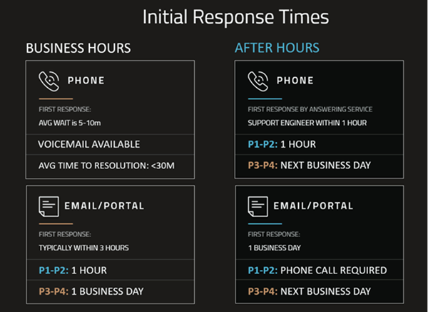

Support Engineers practice in-depth troubleshooting techniques that help minimize the time needed to accurately diagnose and resolve any issues clients may encounter, whether they are data, environment, end user, or product related. There are clear escalation paths available that include Escalation and Senior Escalation engineers, who have years of expertise troubleshooting and engineering complex or creative fixes to problems and ensure the time to resolution is as quick as possible.
The Support team collaborates closely with
There are four priority levels for support response.
P1 - Application Down
P2 - Serious Degradation
P3 - Moderate Impact
P4 - Low Impact / Inquiry
The table below details the initial response times for the varying priority levels.

Clients with valid contracts may email support requests to support@iprotech.com or call to open a Support request. The SLAs described above are enforced according to the Terms and Conditions of
Support may include any of the following features:
Technical Support Portal
You can submit new support requests and view the status of any open tickets at our ticketing portal: support.ipro.com.
Technical Support Email
Email access to our Support Team from 5:00 a.m. to 5:00 p.m. AZ time at support@iprotech.com.
Technical Support Phone Hotline
Toll-free telephone access to our Support Team Monday - Friday from 5:00 a.m. to 7:00 p.m. AZ time at (877) 324-4776 or (602) 324-4780.
Response times will vary according to the method used and time of day, but we make every effort possible to meet all SLA's.
Support incidents are handled on a priority basis - major incidents involving customers who have non-functioning systems (P1 or P2 issues) will be prioritized above less critical issues per the Service Level Agreement.
Incident resolution time will vary based on the ability of the customer to implement and test the recommendations made by our Support Team, and as such
Software Products Updates and Upgrades
Support includes full access to all minor product updates (Service Packs) and maintenance releases (Hot Patches), as well as major version upgrades and the related documentation in print or electronic format. Updates and upgrades may be provided as an electronic download.
24/7 Emergency Support
Full access to all content developed by our Product, Development, Training, and Support teams, including all documentation, How-to's, Knowledge Base articles, and Training Material.
Other hardware and software components that may be required by the customer to operate and use the solution are not included under Support and
Identifying, troubleshooting and/or correcting issues with the licensed software product
Assist customer in applying all patches and software upgrades
Identifying and registering any product defects with our development group
Guidance and advice around specific product functionality and configuration of the product
Although
Performance optimization and system design.
System upgrades - installation and configuration of the product.
Virtualization help, configuration and optimization.
Product training on licensed software products.
Support on products that are end-of-life or end-of-support.
Non-supported items and other enhanced services may be contracted separately through our Services group or Certified partners and include:
Integration with infrastructure devices.
Migration services.
Capacity Planning and System Optimization including virtualization.
Product Training on licensed software products.
Process/Policy/Procedural related assistance.
Should any solution fail to perform substantially in accordance with the documentation,
The solution is maintained and used in strict accordance with the most recent documentation.
The solution is installed on a Server and/or Personal Computer that meets generally accepted, minimum hardware requirements for this type of solution.
The defect is not caused by particular system configurations that are deemed specific to the customer’s messaging infrastructure.
The solution has not been modified.
The customer provides access, including remote access, to the solution as reasonably required by
The customer transmits all the application logs and diagnostics to
If a defect has been fixed in a maintenance release, an upgrade or a new release of the product, then
If the number of cases a customer opens significantly exceed the average of other customers, then
In no event shall